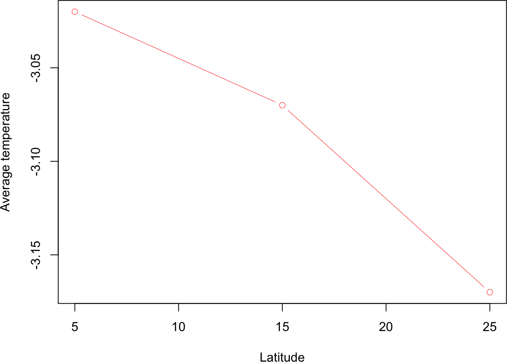
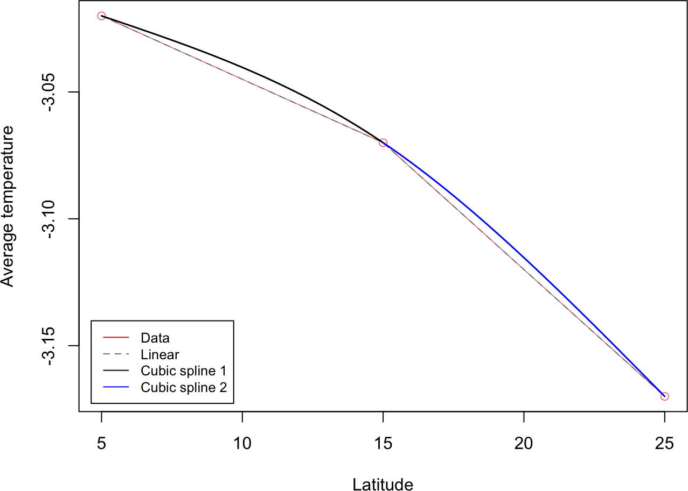
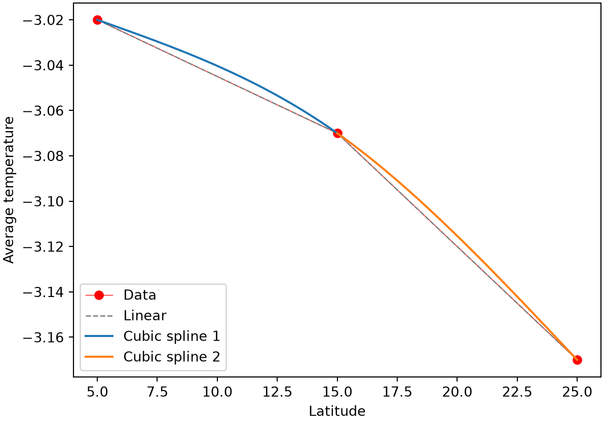

0.1 + 0.2 == 0.3[1] FALSE.Machine$double.eps[1] 2.220446e-16Most problems of interest in this book, finding an equilibrium concentration, a trajectory over time, the root of an equation, cannot be solved analytically. A numerical method is the computational recipe to find the solution: it starts from a mathematical model (an equation, a system of equations, a curve to be reconstructed from data), replaces whatever is continuous or exact in that model with something a computer can represent and manipulate, and repeats a well-defined update until the result is close enough to trust.
Two properties decide whether a numerical method is any good. Accuracy depends on where error enters: the model itself may only approximate the real system (modeling error), replacing a continuous quantity with a finite representation introduces further error (discretization error), and stopping an iterative process early leaves a residual error (iteration error). Efficiency is the computational cost of getting that accuracy, in both runtime and memory. Every method in this book, from the Babylonian method below to the ODE integrators of Part 2B, is a particular trade-off between these two.
A computer represents a real number with a fixed number of bits, so most real numbers are stored as the nearest representable approximation rather than exactly. R and Python both use double precision (64 bits) for their default numeric type, giving roughly 16 significant decimal digits.
0.1 + 0.2 == 0.3[1] FALSE.Machine$double.eps[1] 2.220446e-160.1 + 0.2 == 0.3Falseimport sys
sys.float_info.epsilon2.220446049250313e-160.1 and 0.2 cannot be represented exactly in binary floating point, so their sum lands a tiny bit off from the double closest to 0.3, and the direct comparison is FALSE/False in both languages. .Machine$double.eps / sys.float_info.epsilon (about \(2.2\times 10^{-16}\)) is machine epsilon, the smallest relative gap between two distinct representable numbers; it sets a hard floor on how precisely any double-precision calculation can agree with the exact answer, a limit that reappears in 1C.3 below.
Write a function real_equal(x, y, tol) that reports whether two real numbers should be considered equal, given that direct == comparison is unreliable. (Hint: compare abs(x - y) against a small tolerance rather than testing for exact equality.) Test it on 0.1 + 0.2 and 0.3.
Long before iterative numerical methods had that name, they were already in use: a Babylonian clay tablet catalogued as YBC 7289 records a base-60 approximation of \(\sqrt{2}\) accurate to about six decimal digits (Fowler and Robson 1998). The method it reflects, now called the Babylonian method, finds \(\sqrt{a}\) for \(a > 0\) by repeatedly averaging a guess with \(a\) divided by that guess:
\[x_{n+1} = \frac{1}{2} \left(x_n + \frac{a}{x_{n}}\right)\]
starting from any \(x_1 > 0\), until
\[ |x_{n+1}^2 - a| < \epsilon\]
for a chosen tolerance \(\epsilon\). (This is in fact a special case of Newton’s method for finding the root of \(f(x) = x^2 - a\); Part 2F implements Newton’s method for a general \(f\).)
Objective. Compute the square root of a positive number by iteration, without a built-in square-root function.
Model. The square root of a > 0 is the positive solution of x^2 = a.
Method. The Babylonian iteration x_next = (x + a/x) / 2, from any positive guess, repeated until |x_next^2 - a| < epsilon.
Test. a = 2; starting guesses 1, 100, 200; tolerance epsilon = 1e-6.
Show. The successive iterates and the final estimate for each starting guess.
Verification. Every guess converges to about 1.41421; the result squared is within the tolerance of 2, and a far starting guess just needs a few more iterations.
# The Babylonian method for finding square root
# a: a positive real number; we will solve the square root of a.
# x1: the initial guess of the solution. x1 should be positive too.
# epsilon: a small positive number for the tolerance.
babylonian <- function(a, x1, epsilon = 1e-6) {
if (a <= 0 || x1 <= 0) {
print("a and x1 should be both positive!")
return(0)
} else {
x <- x1
i <- 0
while (abs(x * x - a) > epsilon) {
i <- i + 1
x <- (x + a / x) / 2
}
print(paste0("Number of iterations: ", i))
return(x)
}
}
babylonian(2, 1)[1] "Number of iterations: 4"[1] 1.414214babylonian(2, 100)[1] "Number of iterations: 10"[1] 1.414214babylonian(2, 200)[1] "Number of iterations: 11"[1] 1.414214# The Babylonian method for finding square root
# a: a positive real number; we will solve the square root of a.
# x1: the initial guess of the solution. x1 should be positive too.
# epsilon: a small positive number for the tolerance.
def babylonian(a, x1, epsilon=1e-6):
if a <= 0 or x1 <= 0:
print("a and x1 should be both positive!")
return 0
else:
x = x1
i = 0
while abs(x * x - a) > epsilon:
i += 1
x = (x + a / x) / 2
print(f"Number of iterations: {i}")
return x
babylonian(2, 1)Number of iterations: 4
1.4142135623746899babylonian(2, 100)Number of iterations: 10
1.41421356237384babylonian(2, 200)Number of iterations: 11
1.4142135623738412The method converges fast: each iteration roughly doubles the number of correct digits. Tracking the digits of accuracy against \(\sqrt{2}\) directly confirms this, and also shows machine precision (1C.2) in action:
x <- 1
for (i in 1:7) {
x <- (x + 2 / x) / 2
err <- abs(x - sqrt(2))
digits <- if (err > 0) -log10(err) else Inf
cat("iteration", i, "- digits of accuracy:", round(digits, 1), "\n")
}iteration 1 - digits of accuracy: 1.1
iteration 2 - digits of accuracy: 2.6
iteration 3 - digits of accuracy: 5.7
iteration 4 - digits of accuracy: 11.8
iteration 5 - digits of accuracy: 15.7
iteration 6 - digits of accuracy: 15.7
iteration 7 - digits of accuracy: 15.7 The digit count roughly doubles for the first several iterations (1.1, 2.6, 5.7, 11.8), then flattens out around 15-16 digits by iteration 5: that plateau is machine epsilon’s limit on double precision. Reaching genuinely dozens of correct digits, as historical demonstrations of this method sometimes show, requires arbitrary-precision arithmetic (R’s Rmpfr, Python’s decimal or mpmath) rather than R’s or Python’s default double.
Modify babylonian() to also print the relative error, \(|x_{n+1} - x_n| / x_n\), at every iteration, and confirm it shrinks roughly quadratically (matches the doubling-digits pattern above) until it hits the machine-epsilon floor.
Big-O notation describes how a method’s cost, whether time or memory, grows as the problem size \(n\) grows, ignoring constant factors and lower-order terms. It answers “if I double \(n\), roughly how much more expensive does this get?” rather than giving an exact operation count. A few complexity classes recur throughout this book:
| Complexity | Meaning | Example |
|---|---|---|
| \(O(1)\) | constant, independent of \(n\) | checking whether an integer is even or odd |
| \(O(\log n)\) | logarithmic | binary search over a sorted list |
| \(O(n)\) | linear | finding the maximum of \(n\) unsorted numbers |
| \(O(n \log n)\) | linearithmic | quicksort (average case) |
| \(O(n^2)\) | quadratic | selection sort |
| \(O(2^n)\), \(O(n!)\) | exponential, factorial | enumerating all subsets, or all permutations, of \(n\) items |
The Babylonian method’s iteration count grows with \(-\log_{10}\epsilon\) (since each step roughly doubles the number of correct digits, the number of iterations needed grows only with the logarithm of the number of digits requested). What is its time complexity in terms of the tolerance \(\epsilon\), and how does that compare to the complexity classes in the table above?
Representing a curve on a computer usually means storing it as a finite set of \((x, y)\) points and filling in the gaps between them. The simplest choice, linear interpolation, connects consecutive points with straight-line segments; it is cheap but has a visible kink at every data point. A smoother alternative, cubic spline interpolation (Boor 2001), fits a separate cubic polynomial between each pair of consecutive points and chooses their coefficients so that value, first derivative, and second derivative all agree at every shared point, so the whole curve looks smooth rather than piecewise.
For \(n+1\) points \((x_0, y_0), \dots, (x_n, y_n)\), the cubic piece between \((x_i, y_i)\) and \((x_{i+1}, y_{i+1})\) is
\[y_i(x) = a_i x^3 + b_i x^2 + c_i x + d_i , \tag{1}\]
and matching value, first derivative, and second derivative at each interior point \(x_i\) gives
\[ y_i(x_i) = y_{i+1}(x_i), \quad \frac{dy_i}{dx}(x_i) = \frac{dy_{i+1}}{dx}(x_i), \quad \frac{d^2y_i}{dx^2}(x_i) = \frac{d^2y_{i+1}}{dx^2}(x_i) . \tag{2}\]
Two more conditions are still needed to pin down the remaining coefficients; the natural choice sets the second derivative to zero at the two endpoints,
\[ \frac{d^2y_0}{dx^2}(x_0) = \frac{d^2y_{n-1}}{dx^2}(x_n) = 0 . \tag{3}\]
For a small example (\(n = 3\) points, so two cubic pieces), Equations (1)-(3) reduce to a system of 8 linear equations in the 8 unknown coefficients, solved directly. Here is a 3-point data set of average temperatures at different latitudes:
x <- c(5, 15, 25)
y <- c(-3.02, -3.07, -3.17)
plot(x, y, xlab = "Latitude", ylab = "Average temperature", type = "b", col = "red", lwd = 0.5)
vec_c <- c(y[1], y[2], y[2], y[3], 0, 0, 0, 0) # right-hand side of the linear system
a <- matrix(c(x[1]**3, x[1]**2, x[1], 1, 0, 0, 0, 0,
x[2]**3, x[2]**2, x[2], 1, 0, 0, 0, 0,
0, 0, 0, 0, x[2]**3, x[2]**2, x[2], 1,
0, 0, 0, 0, x[3]**3, x[3]**2, x[3], 1,
3 * x[2]**2, 2 * x[2], 1, 0, -3 * x[2]**2, -2 * x[2], -1, 0,
6 * x[2], 2, 0, 0, -6 * x[2], -2, 0, 0,
6 * x[1], 2, 0, 0, 0, 0, 0, 0,
0, 0, 0, 0, 6 * x[3], 2, 0, 0), nrow = 8, byrow = TRUE)
vec_p <- solve(a, vec_c) # spline coefficients: a0,b0,c0,d0, a1,b1,c1,d1
lin <- approx(x, y, n = 100) # linear interpolation, for comparison
plot(x, y, xlab = "Latitude", ylab = "Average temperature", type = "b", col = "red", lwd = 0.5)
lines(lin$x, lin$y, lwd = 1, col = "grey50", lty = 2)
curve(vec_p[1] * x**3 + vec_p[2] * x**2 + vec_p[3] * x + vec_p[4],
from = x[1], to = x[2], add = TRUE, lwd = 1.5, col = "black")
curve(vec_p[5] * x**3 + vec_p[6] * x**2 + vec_p[7] * x + vec_p[8],
from = x[2], to = x[3], add = TRUE, lwd = 1.5, col = "blue")
legend("bottomleft", inset = .02,
legend = c("Data", "Linear", "Cubic spline 1", "Cubic spline 2"),
col = c("red", "grey50", "black", "blue"), lty = c(1, 2, 1, 1), cex = 0.8)
import numpy as np
import matplotlib.pyplot as plt
x = np.array([5, 15, 25])
y = np.array([-3.02, -3.07, -3.17])
vec_c = np.array([y[0], y[1], y[1], y[2], 0, 0, 0, 0]) # right-hand side of the linear system
a = np.array([[x[0]**3, x[0]**2, x[0], 1, 0, 0, 0, 0],
[x[1]**3, x[1]**2, x[1], 1, 0, 0, 0, 0],
[0, 0, 0, 0, x[1]**3, x[1]**2, x[1], 1],
[0, 0, 0, 0, x[2]**3, x[2]**2, x[2], 1],
[3 * x[1]**2, 2 * x[1], 1, 0, -3 * x[1]**2, -2 * x[1], -1, 0],
[6 * x[1], 2, 0, 0, -6 * x[1], -2, 0, 0],
[6 * x[0], 2, 0, 0, 0, 0, 0, 0],
[0, 0, 0, 0, 6 * x[2], 2, 0, 0]], dtype=float)
vec_p = np.linalg.solve(a, vec_c) # spline coefficients: a0,b0,c0,d0, a1,b1,c1,d1
x_lin = np.linspace(x[0], x[-1], 100) # linear interpolation, for comparison
y_lin = np.interp(x_lin, x, y)
x_vals_1 = np.linspace(x[0], x[1], 100)
x_vals_2 = np.linspace(x[1], x[2], 100)
_ = plt.plot(x, y, "ro-", label="Data", linewidth=0.5)
_ = plt.plot(x_lin, y_lin, "--", color="grey", linewidth=1, label="Linear")
_ = plt.plot(x_vals_1, vec_p[0] * x_vals_1**3 + vec_p[1] * x_vals_1**2 +
vec_p[2] * x_vals_1 + vec_p[3], label="Cubic spline 1", linewidth=1.5)
_ = plt.plot(x_vals_2, vec_p[4] * x_vals_2**3 + vec_p[5] * x_vals_2**2 +
vec_p[6] * x_vals_2 + vec_p[7], label="Cubic spline 2", linewidth=1.5)
plt.xlabel("Latitude")
plt.ylabel("Average temperature")
_ = plt.legend(loc="lower left")
plt.show()
The two cubic pieces meet smoothly at the middle point, while the linear interpolation (dashed) has a visible kink there, the trade-off this section opened with: linear interpolation is simpler and cheaper, but cubic spline interpolation better matches how a physical quantity like temperature actually varies continuously with latitude.